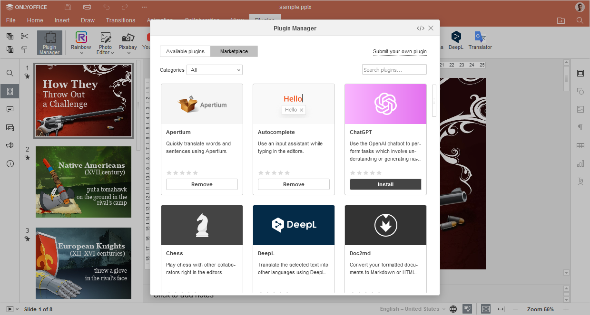
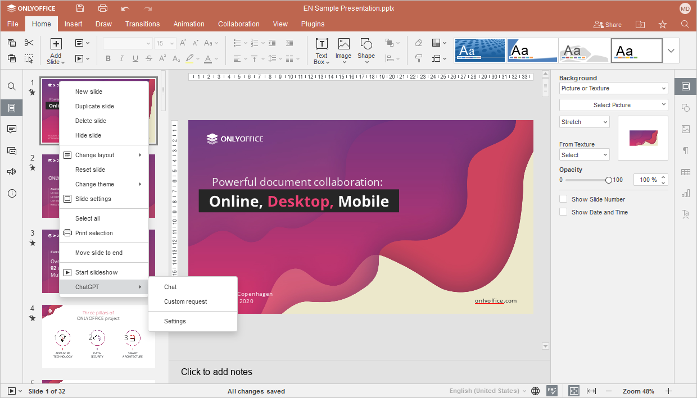

ChatGPT
Dodatak ChatGPT omogućava korišćenje OpenAI četbota za obavljanje zadataka koji uključuju razumevanje ili generisanje prirodnog jezika ili koda.
Počev od ONLYOFFICE Docs 8.2, nijedan dodatak ne dolazi uz editore podrazumevano. Dodaci se instaliraju putem Menadžera dodataka.
Instalacija
Da biste instalirali dodatak ChatGPT,
- Idite na karticu Dodaci.
- Otvorite Menadžer dodataka.
-
Pronađite ChatGPT na tržištu dodataka i kliknite na dugme Instaliraj ispod.

- Kliknite desnim tasterom miša bilo gde u dokumentu i pronađite ChatGPT u kontekstnom meniju.
-
Kliknite na Podešavanja da biste nastavili sa konfiguracijom dodatka.

Konfiguracija
- Kreirajte svoj API ključ na stranici OpenAI API ključevi.
- Kopirajte generisani API ključ u odgovarajuće polje u prozoru Podešavanja.

Kako koristiti
ONLYOFFICE ne preuzima odgovornost za bilo koje ChatGPT rezultate koji mogu sadržati greške ili propuste, kao ni za bilo kakav uznemiravajući ili neprimeren sadržaj. Informacije sadržane u rezultatima dodatka generiše ChatGPT i pružaju se po principu „kako jeste“, bez dodatnog filtriranja od strane ONLYOFFICE-a.
Nakon instalacije, ChatGPT će biti dodat u kontekstni meni, a svim funkcijama ChatGPT-a pristupa se desnim klikom miša. Izaberite deo teksta ili reč da biste otvorili kontekstni meni i izabrali jednu od funkcija ChatGPT-a: Analiza teksta, Analiza reči, Prevod, Generisanje slika, Tezaurus, Ćaskanje i Prilagođeni zahtev.
Ćaskanje
Integracija ChatGPT-a u kontekstni meni omogućava vam da pokrenete Ćaskanje sa bilo kog mesta u dokumentu. Koristite četbot za interakciju i vođenje razgovora, postavljanje pitanja i dobijanje odgovora na svoje zahteve.
Idite na opciju Ćaskanje iz ChatGPT kontekstnog menija i započnite razgovor u tekstualnom polju na dnu prozora ChatGPT.

Prilagođeni zahtev
Funkcija Prilagođeni zahtev omogućava tokenizaciju prirodnog jezika ili koda. Alat pretvara ulazni tekst u listu tokena, obrađuje zahtev, ponovo pretvara generisane tokene u tekst i vraća niz u dokument.
- Da biste napravili prilagođeni zahtev, idite na ChatGPT kontekstni meni i kliknite na Prilagođeni zahtev.
-
U tekstualno polje Open AI unesite tekst koji želite da tokenizujete. Alat prikazuje ukupan broj tokena u tekstu.

-
Kliknite na Prikaži napredna podešavanja da biste konfigurisali podešavanja zahteva:

- Model – model koji će generisati rezultat. Neki modeli su pogodni za zadatke prirodnog jezika, dok su drugi specijalizovani za kod. Da biste saznali više o ovim modelima, pogledajte zvanični ChatGPT veb-sajt.
- Maksimalna dužina – maksimalan broj tokena koji se generišu u rezultatu.
- Temperatura – ovaj parametar kontroliše slučajnost; na primer, smanjenje vrednosti rezultira manje nasumičnim rezultatima. Kako se temperatura približava nuli, model postaje determinističan i repetitivan.
- Top P – alternativa uzorkovanju sa temperaturom, nazvana uzorkovanje jezgra (nucleus sampling), gde model razmatra rezultate tokena sa verovatnoćom mase top_p.
- Zaustavne sekvence – do četiri sekvence pri kojima će API zaustaviti dalje generisanje tokena. Vraćeni tekst neće sadržati zaustavnu sekvencu.
- Kliknite na dugme Pošalji da biste obradili tekst ili kliknite na dugme Obriši da biste uklonili zahtev i uneli novi.